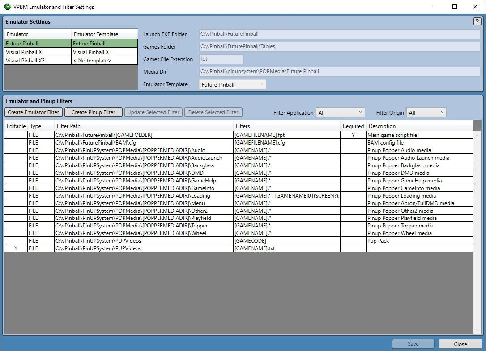
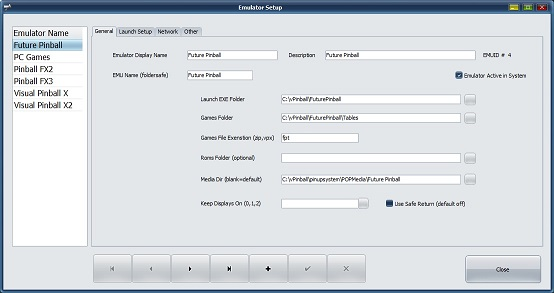
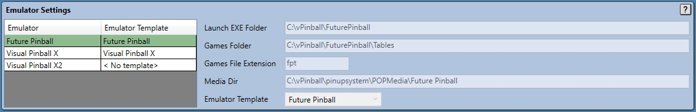
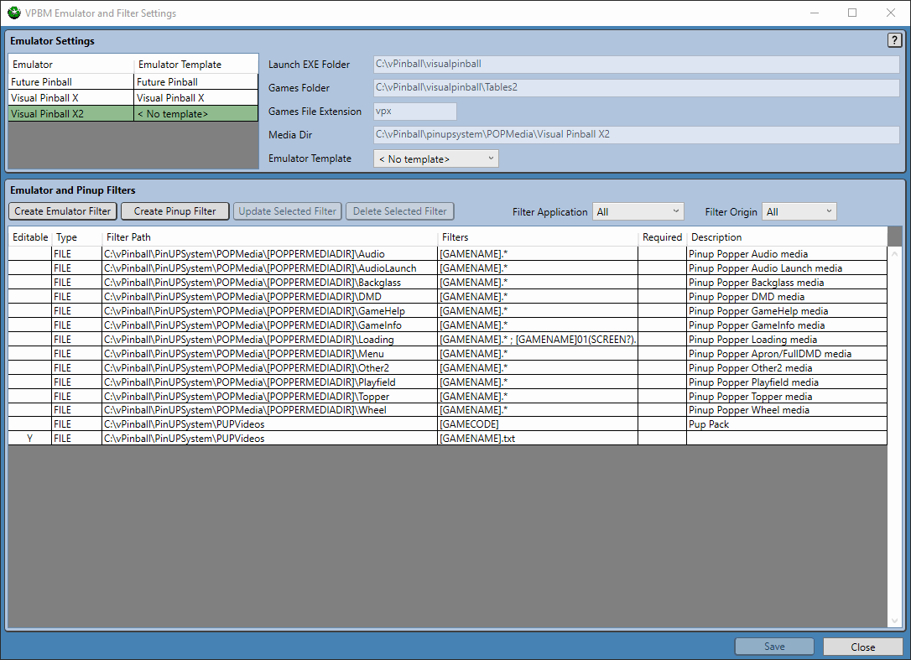
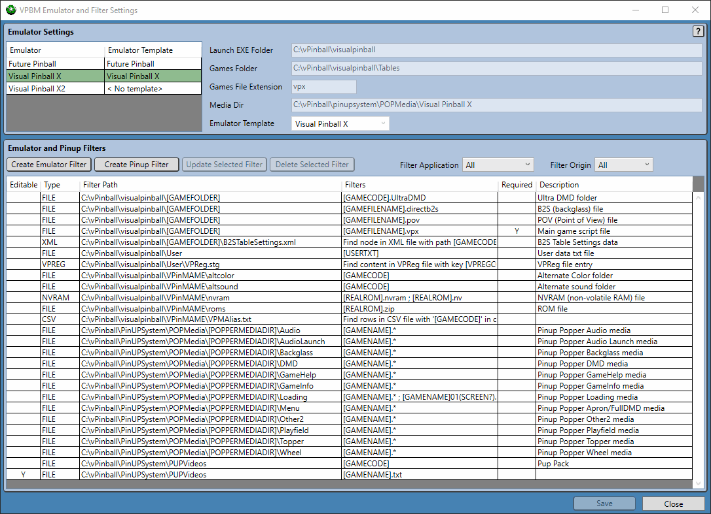
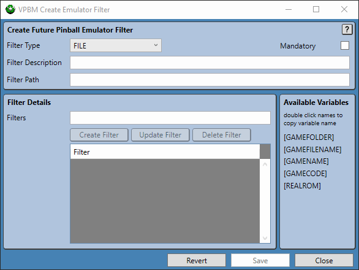
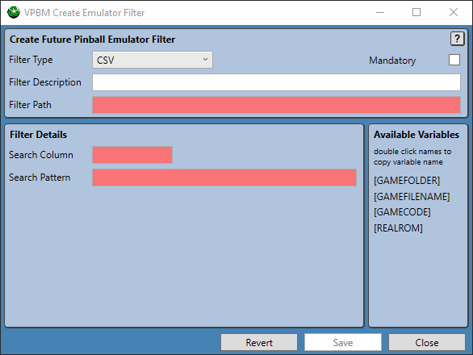
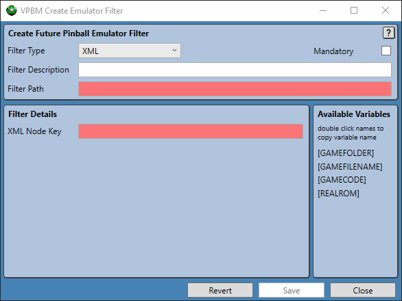

Emulator and Filter Settings
Virtual Pinball Backup Manager - managing your backups, one game at a time
Virtual Pinball Backup Manager - managing your backups, one game at a time
Emulator and Filter Settings are used to control finer details of how VPBM will search for content for games installed across one or more emulators. When each game is scanned for content a set of filters defined for the game will be iterated over to look for matching content, which will be displayed within VPBM, and form the basis of content for backup and restore operations. While a series of built in filters exist, this window is designed to support users adding their own filters to be applied globally for all games of a given emulator type.
These filters are different to the game specific filters that can be created as described in Selected Game Custom Filters Panel as these filters are applied to every game for the specific emulator, or in the case of user added Pinup Popper filters, they would be applied to every game in the system.
There are two main functions of the Emulator and Filter Settings window, they are:
Located at the top of the Emulator and Filter Settings window, this panel is largely provided to allow users to view details of emulators that have been defined within the PinUP Popper Setups, Emulators Setup page. An example of which is shown below.
Any emulator that is found in this setup, and that has been marked as active via the Emulator Active in System checkbox, will be displayed in the Emulator Settings panel. The panel below is the result of the Visual Pinball X, Future Pinball and a second VPX instance Visual Pinball X2 being activated in Pinup Popper Setup. Key settings values set in Pinup Popper Setup are displayed in the Emulator Settings panel for easy reference as well as a Emulator Template selector which is enabled for emulators that don't have built in templates allocated to them.
Both the Visual Pinball X and Future Pinball emulators are core emulators in the virtual pinball ecosystem, and as such the filters that each emulator requires to find key content is well understood. As such, templates have been developed for each emulator documenting these filter requirements with names matching the emulators. When an emulator is active in the system, VPBM looks to see if a filter exists with matching name and if such a filter does, it is locked in as the template used to represent that emulator.
Defined emulators with names not matching VPBM filters will initially not have a template assigned, the user is then able to select an appropriate filter to allocate, if such a template exists.
In the example below, as various emulator options are applied to the Visual Pinball X2 emulator, the associated filters that would be applied are shown immediately in the Emulator and Pinup Filters panel.
As shown above, the Emulator and Pinup Filters panel is used to display a summary of all current filters associated with the selected emulator. Generally these filters are built in, either from an associated emulator template, or sourced from the built-in Pinup filters. There are cases however where this set of filters may not be enough, such as when a new filter is to be included or when new content has started to be used for games. To address this issue, the Emulator and Pinup Filters panel provides the ability to create, modify and delete custom filters on a per emulator or per Pinup basis.
Any custom filters that are created are used to supplement built-in filters. Built-in filters cannot be deleted. Custom emulator filters that are defined are relative to the base emulator directory and are only used by the corresponding emulator, however custom Pinup filters have a scope covering all games and are relative to the base Pinup directory.
Four buttons are provided in the Emulator and Pinup Filters panel to manage custom filters, they are:
Additionally, there are two toggles which allow the user to filter the contents of the Emulator and Pinup Filters panel based on the application the filter is applied to (the Emulator or Pinup) or on the origin of the filter (built-in or custom) as shown below.
The Create/Update Filter window is used to either create new, or update existing emulator or Pinup filters. This window is launched from the Emulator and Filter Settings window when the user elects to use the Create Emulator Filter, Create Pinup Filter or Update Selected Filter buttons.
The title of the window is updated to reflect the command that launched the window. In the example below, the window was launched as a result of the user pressing the Create Emulator Filter button while viewing the Future Pinball emulator.
Fields within the window will be highlighted to mark changes that have been made or invalid field values.
The Create/Update Filter window is divided into two portions, the top portion is used to define the filter type being set in the Filter Type selector. A Mandatory checkbox is provided for any filters that must be present for a game, the Filter Description allows a free text description of the game and the Filter Path provides the path the filter should use.
There are three types of filters that users can add, which will be described individually below, they are:
For all filters, a set of filter variables found in the Available Filters panel can be used in the Filter Path text field or within the Filter Details panels (who's contents changes based on the filter type). Hovering over a filter variable will display a tooltip describing the variable, while double clicking it will copy it to the clipboard for pasting into fields.
FILE filters are filters looking for actual files within the parent application directory. In almost all cases, this is the filter that users require to use to add an additional files to filter on. Unlike CSV and XML filters, file filters allow multiple filters to be supplied to be searched for in the path specified in Filter Path.
In the example below a filter is setup to search for a file in the [GAMEFOLDER] with a .txt extension that matches the games filename.
CSV filters are designed to operate on CSV files looking for a line within the CSV file matching a given key in supplied column. Ff found the entire line matching the supplied key and column will be extracted when backing up files.
The example below shows a filter designed to extract a line of CSV text from a CSV file identified in the Filter Path text field. The filter will look for a line in the CSV file with the games [GAMECODE] value in the first column (column 0).
XML filters are designed to operate on XML files looking for a node within the top level of the XML file matching a given key, if found the entire block corresponding to the top level key will be extracted when backing up files.
The example below shows a filter designed to extract a node from the XML file identified in the Filter Path text field. The filter will look for a node within the top level of the XML file which matches a games [GAMECODE] value.
Three buttons are available at the bottom of the Create/Update Filter window, that provide the ability to save or forget changes, they are:
Note that any filter changes applied on this window are only saved back to the parent Emulator and Filter Settings window, changes need to be saved on this page as well for them to be saved and used by the application.
Two buttons are available at the bottom of the Emulator and Filter Settings window, that provide the ability to save or forget changes, they are: